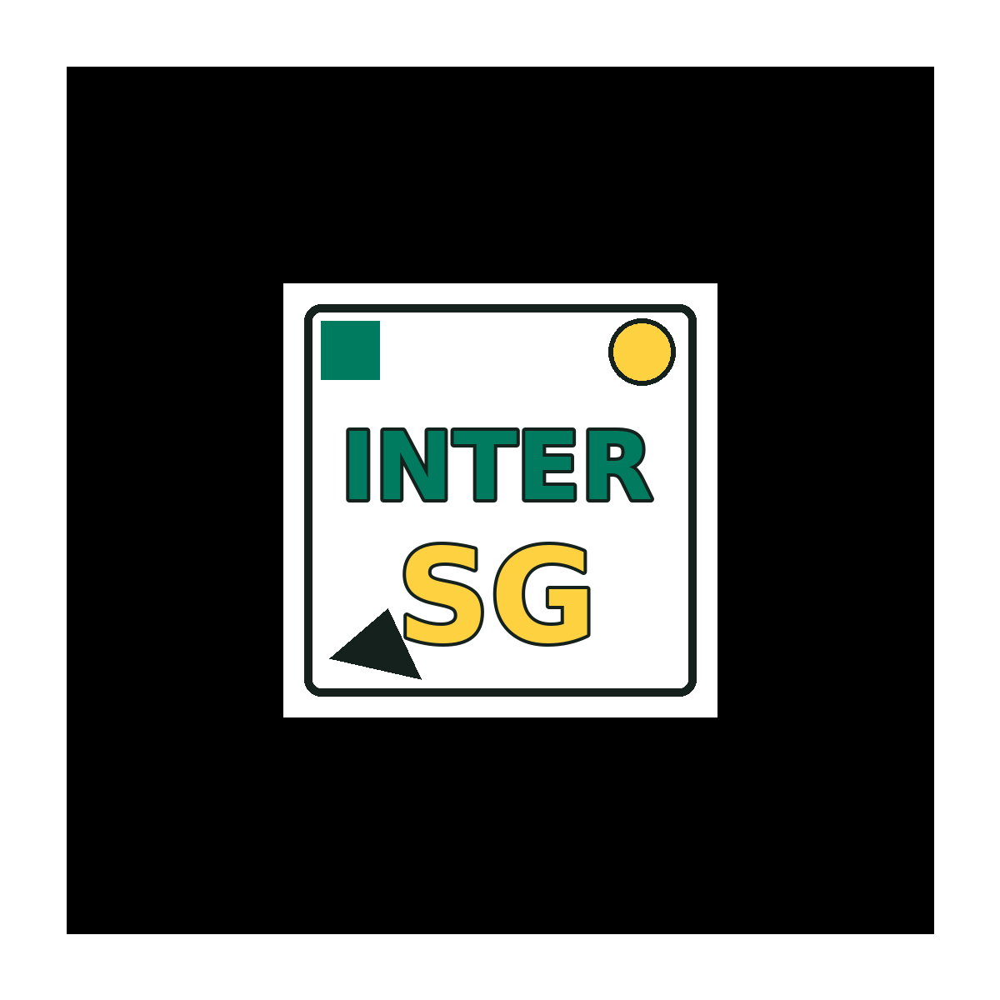

Marcador INTER SG
Este marcador está integrado al centro del QR Code en la imagen única. Aquí también lo tiene aparte para pruebas internas del programa.

Este marcador está integrado al centro del QR Code en la imagen única. Aquí también lo tiene aparte para pruebas internas del programa.
